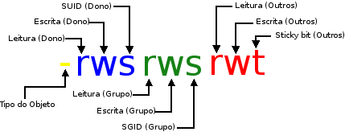

03 - Permissões especiais
Contéudo do artigo
Introdução
SUID
SGID
Sticky
Referências
Autores
Introdução
Somente as permissões básicas não dão toda a flexibilidade que precisamos para controlar o acesso a diretórios e arquivos, por este motivo nós temos mais três modelos especiais de permissões para o controle de acesso, o suid (set user id), sgid e Sticky (Sticky bit).
Exemplo de permissão especial
SUID (Set User ID)
O SUID é utilizado somente para arquivos executaveis e não se aplica a diretórios.
Nas permissões básicas, o usuário que executou o programa é dono do processo. Mas em arquivo executável com a propriedade SUID aplicada, o programa rodará com o ID do dono do arquivo, não com o ID do usuário que executou o programa.
A permissão de acesso especial SUID pode aparecer somente no campo Dono.
Um exemplo de um arquivo executavel com a propriedade SUID é o arquivo /usr/bin/passwd.
lucashe4rt@He4rt-PC:~$ ls -lah /usr/bin/passwd
-rwsr-xr-x 1 root root 63K Feb 4 09:31 /usr/bin/passwd
Ou seja, quando executamos o comando passwd com qualquer usuário normal, o processo é executado com ID do usuário root (como se o usuário root tivesse executado o comando passwd), pois somente o usuário root tem permissão para alterar o arquivo /etc/passwd.
Aplicando o SUID
Formato Literal
lucashe4rt@He4rt-PC:~$ sudo chmod u+s arquivo.txt
lucashe4rt@He4rt-PC:~$ ls -lah arquivo.txt
-rws-----x 1 root root 0 Mar 17 21:57 arquivo.txt
Formato Octal (4)
lucashe4rt@He4rt-PC:~$ sudo chmod 4750 arquivo.txt
lucashe4rt@He4rt-PC:~$ ls -lah arquivo.txt
-rwsr-x--- 1 root root 0 Mar 17 21:57 arquivo.txt
No exemplo acima nós atribuimos a propriedade SUID (4), seguido de todas as permissões para o dono (7), leitura e execução para o grupo (5) e nenhuma permissão para os outros usuários (0).
Retirando o SUID
Formato Literal
lucashe4rt@He4rt-PC:~$ sudo chmod u-s arquivo.txt
lucashe4rt@He4rt-PC:~$ ls -lah arquivo.txt
-rwxr-x--- 1 root root 0 Mar 17 21:57 arquivo.txt
Formato Octal
lucashe4rt@He4rt-PC:~$ sudo chmod 0750 arquivo.txt
lucashe4rt@He4rt-PC:~$ ls -lah arquivo.txt
-rwxr-x--- 1 root root 0 Mar 17 21:57 arquivo.txt
SGID (Set Group ID)
O SGID E o SUID tem a mesma função porém o SGID quando é aplicado em um diretório, os novos arquivos que são criados dentro do diretório assumem o mesmo ID de Grupo do diretório com a propriedade SGID aplicado.
A permissão de acesso especial SGID pode aparecer somente no campo Grupo.
Por exemplo, se no diretório home de algum usuário pertencer ao grupo "noobs" e ter o SGID habilitado, todos os arquivos dentro da home do usuário serão criados com o grupo "noob".
Aplicando o SGID
Formato Literal
lucashe4rt@He4rt-PC:~$ sudo chmod g+s Desktop/
lucashe4rt@He4rt-PC:~$ ls -lah Desktop/
drwxrwsr-x 2 lucashe4rt lucashe4rt 4.0K Mar 15 17:29 .
Obs: como sabemos o caractér ponto (.) representa o diretório corrente, então como estamos listando o conteúdo de desktop o ponto significa o diretório desktop.
Formato Octal (2)
lucashe4rt@He4rt-PC:~$ sudo chmod 2750 Desktop/
lucashe4rt@He4rt-PC:~$ ls -lah Desktop/
drwxr-s--- 2 lucashe4rt lucashe4rt 4.0K Mar 15 17:29 .
No exemplo acima nós atribuimos a propriedade SGID (2), seguido de todas as permissões para o dono (7), leitura e execução para o grupo (5) e nenhuma permissão para os outros usuários (0).
Retirando o SGID
lucashe4rt@He4rt-PC:~$ sudo chmod g-s Desktop/
lucashe4rt@He4rt-PC:~$ ls -lah Desktop/
drwxr-x--- 2 lucashe4rt lucashe4rt 4.0K Mar 15 17:29 .
Sticky (Sticky bit)
A propriedade Sticky, em arquivos executaveis, faz com que o sistema mantenha uma imagem do programa em memória depois que o programa finalizar. Isso aumenta o desempenho, pois é feito um cache em memória então da próxima que o programa for executado será carregado mais rápido.
Em diretórios, a propriedade Sticky impede que outros usuários deletem ou renomeam arquivos dos quais não são donos, isto normalmente é utilizado para aumentar a segurança, pois o diretório estará em modo de somente incrementação assim só o dono do arquivo tem permissão para deletar, mover, renomear os arquivos dentro de um diretório com a propriedade Sticky aplicada.
A permissão especial Sticky pode ser especificada somente no campo outros usuários das permissões de acesso.
Um exemplo é o diretório /tmp, onde todos os usuários devem ter acesso para que possam criar seus programas temporarios, mas não podem apagar os arquivos de outros usuários.
Desta forma é uma boa prática aplicar essa propriedade no diretório /tmp visando a segurança.
Aplicando Sticky
Formato Literal (t)
lucashe4rt@He4rt-PC:~$ sudo chmod o+t /tmp/
lucashe4rt@He4rt-PC:~$ ls -lah /tmp/
drwxrwxrwt 19 root root 460 Mar 22 14:35 .
Formato Octal (1)
lucashe4rt@He4rt-PC:~$ sudo chmod 1777 /tmp/
lucashe4rt@He4rt-PC:~$ ls -lah /tmp/
drwxrwxrwt 19 root root 460 Mar 22 14:35 .
No exemplo acima nós atribuimos a propriedade Sticky (1), seguido de todas as permissões para o dono, grupo e outros usuários respectivamente (777).
Retirando Sticky
lucashe4rt@He4rt-PC:~$ sudo chmod o-t /tmp/
lucashe4rt@He4rt-PC:~$ ls -lah /tmp/
drwxrwxrwx 19 root root 460 Mar 22 14:35 .
Referências
Roberto's Blog - Linux - Permissões de Acesso Especiais
Guia Foca Linux - Permissões de Acesso Especiais
Autores
- Lucas Silva (LucasHe4rt) - Back-end Developer & Member of He4rt Developers - Twitter